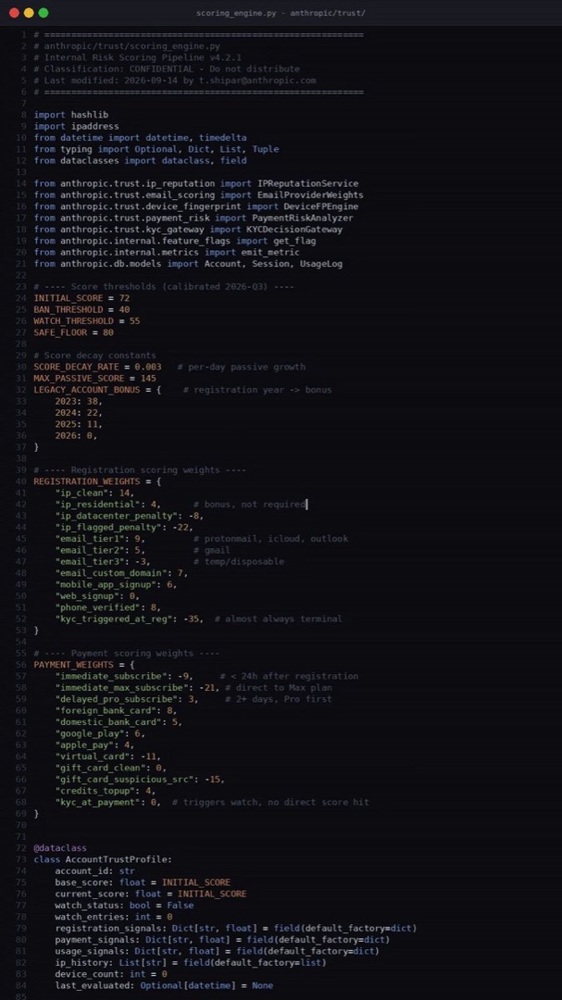
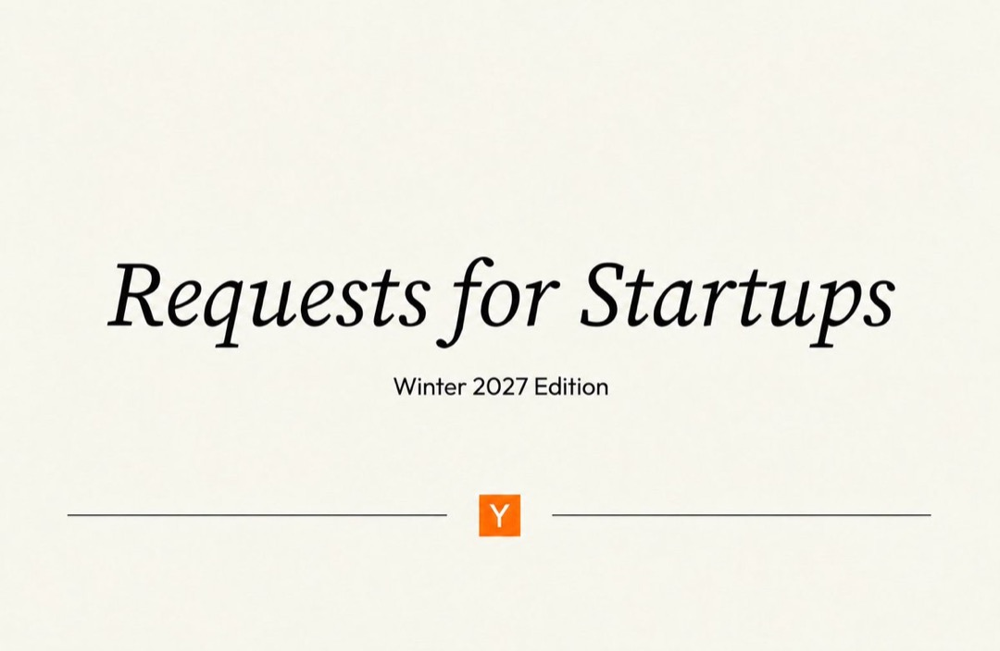

本期速览
01 GitLab AI 降 81% 管道翻译成本
03 Eleven v4 支持情感标签语音合成
04 Claude 积分制封号机制逆向拆解
05 YC 公布 11 个重点创业方向
01｜GitLab AI 降 81% 管道翻译成本
来源（X） · @gitlab · 2026-10-29 07:58
中文译文
CI/CD 现代化不再需要耗费数年时间。了解 agentic AI 如何在 GitLab 测试中将流水线翻译工作量减少了高达 81%。
原文
CI/CD modernization no longer has to take years. See how agentic AI reduced pipeline translation effort by up to 81% in GitLab testing.
02｜MiniMax H3 视频成本低至1分/秒
来源（X） · @GaryAIytb · 2026-10-28 10:48
大家都知道 sd2.0 mini 现在已经很便宜了，火山官方是 9 分钱一秒（不会不知道吧？），而 h3 居然能做到 1 分钱一秒！ https://x.com/i/article/2115273035993468928
03｜Eleven v4 支持情感标签语音合成
来源（X） · @ElevenLabsDevs · 2026-10-21 01:23
中文译文
为任何产品添加富有表现力的语音。Eleven v4 Turbo：丰富的情感、[laughs] 和 [whispers] 等音频标签、90+ 种语言、约 150ms 的中位首语音响应时间。
原文
Add expressive speech to any product. Eleven v4 Turbo: rich emotion, audio tags like [laughs] and [whispers], 90+ languages, ~150ms median time to first speech.
04｜Claude 积分制封号机制逆向拆解
来源（X） · @make_claude · 2026-10-29 01:51
Claude使用积分制。注册时账号获得初始分数，之后根据行为加分或扣分。低于阈值直接封号。回分很难
影响分数的因素:
注册
> 干净IP是最重要的因素。不一定要家宽，但必须干净
> Gmail已经不是最优选，有权重更高的邮箱服务
> 注册时直接弹KYC的号可以扔了
> 用手机App注册会加分
支付
> 刚注册就订阅会扣分
> 直接上Max会大幅扣分。最好等两天先订Pro
> 支付时弹KYC说明账号在考察期，但不一定会封
> 国外实体银行卡加分。Google Play也行。虚拟卡扣分
使用
> 不要一次把限额用完。宁可两个号轮换也不要一个号撸到底
> Desktop客户端有少量加分。尽量少用网页端
> 手机端也有少量加分
> 开启记忆功能加分。记忆文件越多分越高
IP和设备
> 稳定性是关键。不要跳IP，尽量一直用同一个
> 代理必须全局模式并开启TUN
> 多设备登录大幅扣分。理想状态是一台电脑一个客户端
> 频繁换IP、频繁登录、高并发都会大幅扣分
账号年龄
> 老号有巨大的容错空间。2023年的号明显更高
> 分数随时间增长，但很慢
其他
> Windows和macOS没区别。Linux会扣分
> 时区和语言基本不影响。不会因为北京时间就封号
> 跟Claude说自己是中国人没问题，记忆不会触发封号
> 大量使用Fable会扣分
> 升级Max大概率进入观察期，除非是高权重老号
观察期和封号
> 接近阈值时账号可能进入观察期。典型特征是掉登录
> 观察期继续扣分就会封号
> 高分号可以扛过多次观察期
关注我，拆解你每天在用的服务背后到底怎么运作的

引用内容
make claude @make_claude
05｜YC 公布 11 个重点创业方向
来源（X） · @0xshawnpang · 2026-10-28 15:01
1. 太空应用：火箭发射很快会便宜很多。今天还亏钱的太空生意，到时候可能就能成立，所以现在值得提前做。
2. AI 赋能普通人：找聪明、但不一定有专业执照的人，配上 AI，去做并购咨询、医保报销、移民材料这类过去只能靠专家干的活。
3. 美国本土机器人产业链：机器人软件进步很快，但是硬件很拉。美国现在大量依赖进口，稀土磁体还被卡脖子，所以要在美国本地做机器人和关键零部件。
4. 文风更好的大模型：大厂为了把模型练得会写代码、会当 agent，把文字风格练得很死板。专门做「写得像人、聊起来舒服」的模型，反而有机会。
5. 政府福利核验基础设施：申福利要反复交收入、住址证明，每个部门各审一遍，又慢又容易造假。做成类似 Plaid 的一层：用户授权后，从源头拉真实数据，一次核验、多个项目通用。
6. 实体 AI 基建的融资系统：建机器人、GPU 集群、数据中心要先砸大钱，银行却还按传统设备贷款来审。需要专门做租赁、贷款、证券化、风险对冲的金融公司。
6. 行业专用基础模型：做一个只服务制造、能源或生物等垂直领域的模型。目标是：算力成本远低于通用大模型，专业任务上却不输甚至更好。
7. 地方政府审批 AI：盖房、开公司都要过市政府审批，很多活还是人肉对照图纸和法规。用 AI 处理许可、zoning、投诉、检查，审批更快，项目更容易落地。
8. 数据中心供应链：AI 数据中心在大规模建设，缺的不只是芯片和电，还有变压器、开关柜、液冷设备、特种钢材。谁能补上这些缺口，谁就能赚钱。
9. 内网 / 断网可用的 AI：国防、银行、医院的核心数据不能上公有云。要卖能在客户机房、甚至断网环境里跑的模型、部署工具和安全认证。
10. 企业自有模型能力：开源模型已经够强，很多公司不想永远向 OpenAI 这类公司租接口。帮企业用自己的数据和业务流程，把模型训成自己的、并能持续改进。
引用内容
Y Combinator @ycombinator
中文译文
AI 的瓶颈正在超越模型本身。
我们对致力于打造硬件、基础设施、金融系统和专用软件以将 AI 带入实体经济的初创公司充满期待——从工厂和数据中心到政府和太空领域。
https://ycombinator.com/rfs
原文
The bottlenecks in AI are moving beyond the models.
We’re excited about startups building the hardware, infra, financial systems, and specialized software to bring AI into the real economy, from factories and data centers to government and space.
https://ycombinator.com/rfs
